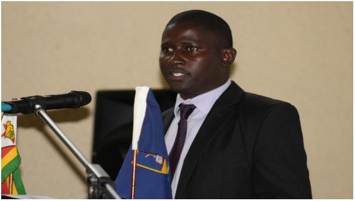

Statistical Analysis Consultancies
Below are excepts of testimonials from some of the clients we have assisted:
- ...Cathy Ward, Pardon Masuka and Katya Mauff I need to mention particularly as the stats gurus. Without your help I would never have able to find my
way through the regression and SEM modelling... Moolla, S (2012). Parenting: Risk and protective factors for mothers with a history of exposure to family
violence. A minor dissertation submitted in partial fulfillment of the requirements for the award of the
degree of Master of Arts (Clinical Psychology). University of Cape Town. ...
- The authors thank Pardon Masuka , Medical Statistician from Cape Town, SouthAfrica, for statistical review Endler, Grunewald and Saltvedt (2012). Epidemiology of Retained Placenta: Oxytocin as an Independent Risk Factor. Obstet Gynecol
. 2012 Apr;119(4):801-9. doi: 10.1097/AOG.0b013e31824acb3b.
- ...to Mr Pardon Masuka at Figures Consulting, for his kind assistance with the statistical
analysis of the data. van Wyk, L. J. (2011). Developing a corporate personality measuring instrument
based on an established CSR framework. Thesis submitted in fulfilment of the requirements for the degree Philosophiae
Doctor in Sociology at the North-West University
Workshop Presentations
Topic: An investigation into the impact of micro-finance loans on the performance of Micro, Small and Medium-sized Enterprises.
THEME: THE UZ/GSM MAKING A DIFFERENCE TO SOCIOECONOMIC DEVELOPMENT THROUGH RESEARCH.

Mr Pardon Masuka presenting on Micro-finance loans on performance of Micro, Small and Mediumsized Enterprises, supervised by Mr Ephraim Makoni